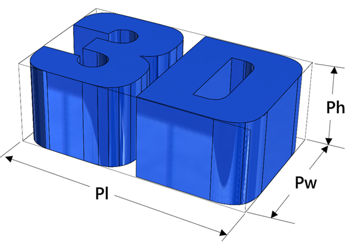

本ルールは、対象となる積層造形サブプロセスに適合する最大造形サイズ（全体寸法）をチェックします。
積層造形においては、部品の全体寸法（造形サイズ）を把握し、造形装置のビルドプレート上に正しく配置でき、造形可能であるかを確認することが重要です。造形装置のビルドプレートに適合した適切な部品サイズとすることで、実際の製造における遅延を防ぎ、追加コストを削減することができます。
ルール構成では、ユーザーはサブプロセスごとに最大造形サイズの値を設定することができます。また、サブプロセスに依存しないデフォルトの造形サイズを設定することも可能です。

Pl = 造形長さ
Pw = 造形幅
Ph = 造形高さ（高さはビルド方向に基づいて決定されます）